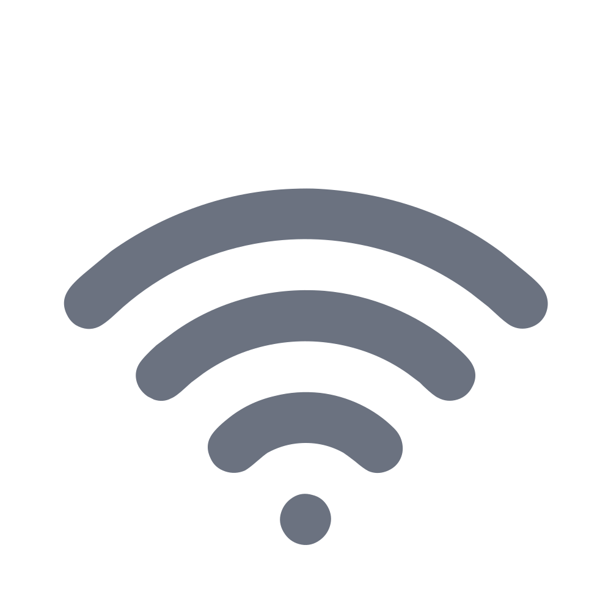
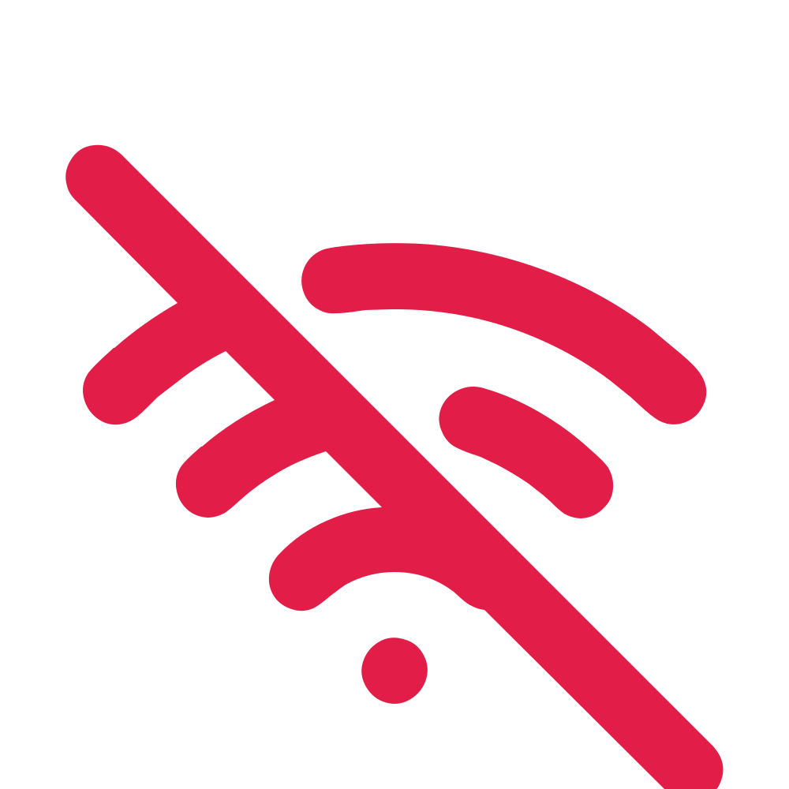
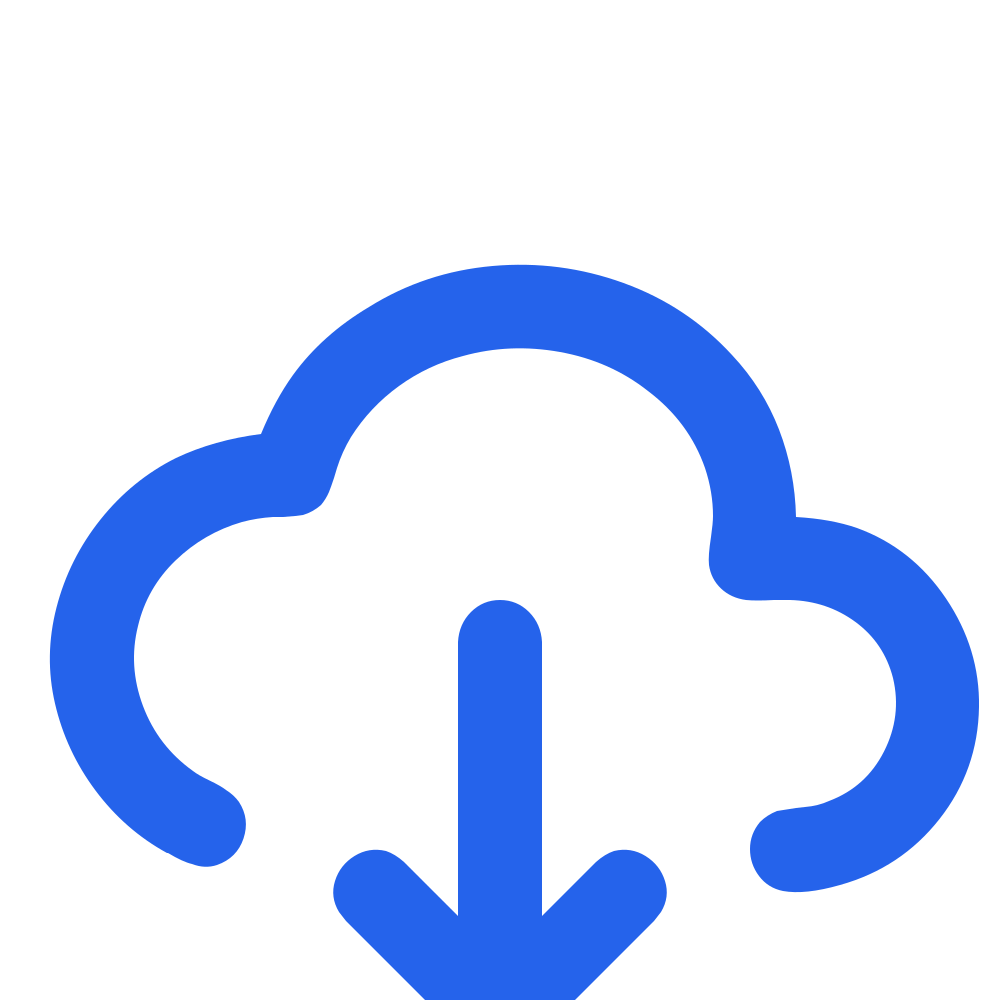
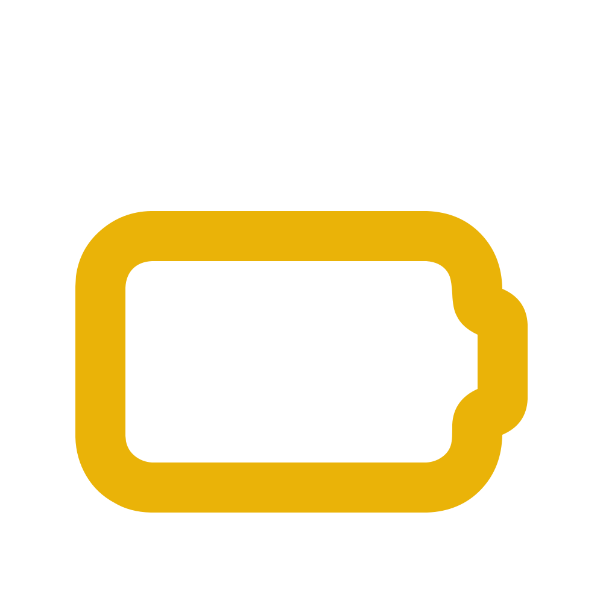
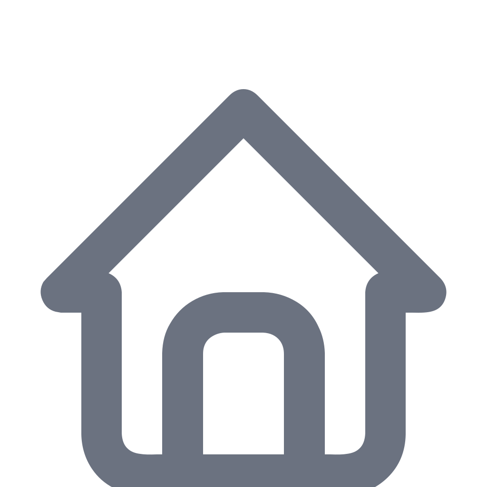
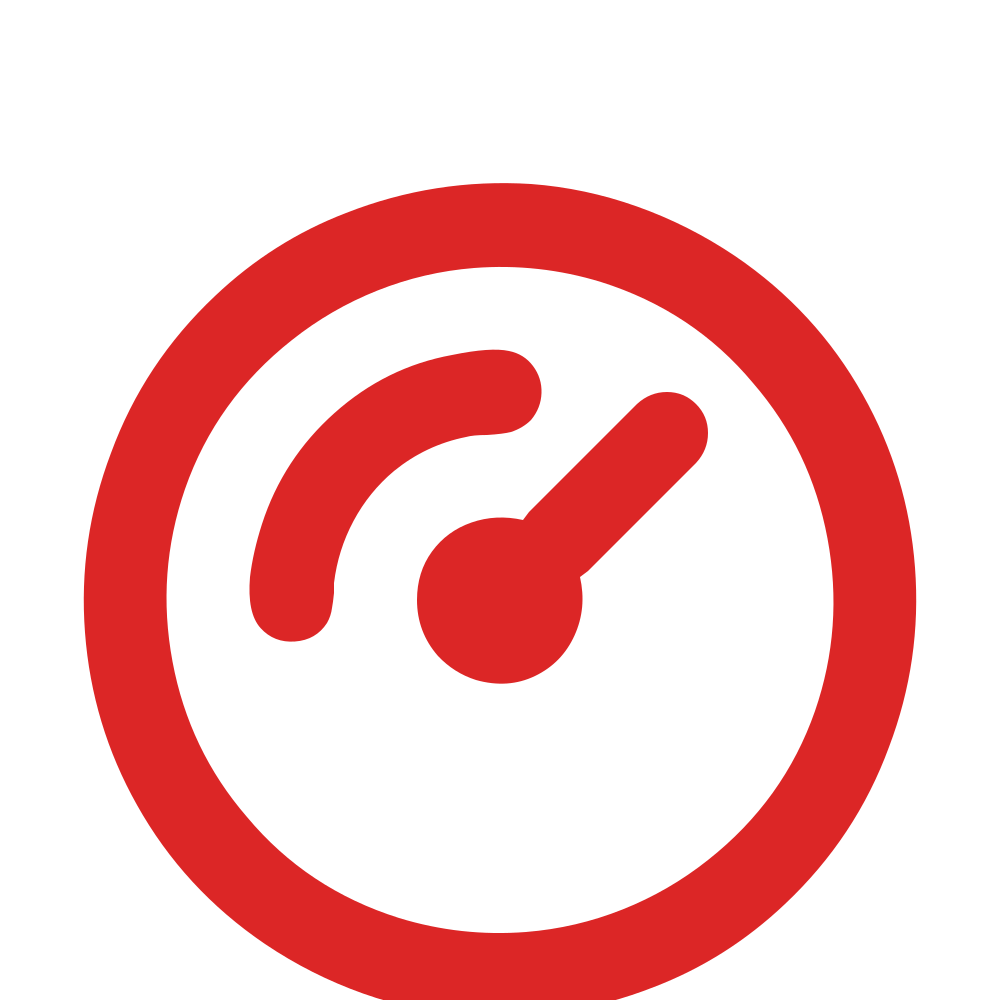
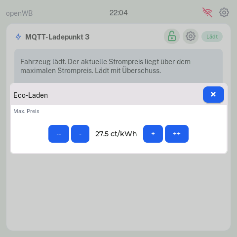
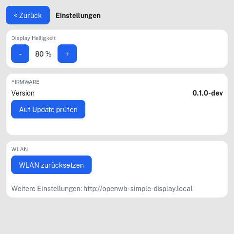

Anleitung
Installation, Ersteinrichtung und eine vollständige Erklärung aller Symbole, Einstellungen und Bedienelemente von Display und Weboberfläche.
- Hardware
- Installation
- Ersteinrichtung
- Statusleiste
- Energiefluss-Diagramm
- Ladepunkt-Karte
- Einstellungen-Popup
- Einstellungen am Display
- WLAN zurücksetzen
- Firmware-Updates
- Weboberfläche
- PIN-Schutz
- Hell/Dunkel & automatischer Wechsel
Hardware
Woher bekomme ich die Hardware?
Unterstützt wird aktuell nur das Guition/Sunton ESP32-4848S040C — ein 4″ 480×480 IPS-Touch-Panel mit ST7701S-Displaytreiber und kapazitivem GT911-Touch, erhältlich z. B. über AliExpress unter mehreren Händlernamen (Guition, Sunton). Es gibt das Board auch in einer Variante mit eingebauten Relais für Smart-Switch-Anwendungen — für dieses Projekt reicht die einfache Version ohne Relais (Modellbezeichnung „ESP32-4848S040C", ohne Relais-Zusatz).
AliExpress-Angebote ändern sich ständig, daher ein Suchlink statt eines einzelnen Angebots — auf das genaue Modell und Bewertungen des Verkäufers achten. Keine Verbindung oder Empfehlung dieses Projekts zu einem bestimmten Händler.
Stromversorgung
Getestet und empfohlen wird ausschließlich USB-C — dasselbe Kabel dient auch zum Flashen. Das Board hat laut Community-Berichten weitere Stromanschlüsse (u. a. einen JST-Akku-Anschluss), die hier nicht getestet sind:
Gehäuse & Halterungen
Von der Community entworfene, kostenlose 3D-Druckdateien (nicht Teil dieses Projekts, keine Gewähr für Passgenauigkeit oder Lizenzbedingungen — vor dem Druck selbst prüfen):
- Screen Frame and Stand — Rahmen mit Standfuß (Printables)
- Wandmontage mit Platz für einen Akku (Printables)
- EU-Unterputzdose-Wandhalterung (60 mm-Gerätedose, Printables)
- Gehäuse mit USB-C/PD-Modul-Unterstützung (Printables)
Installation
Die Firmware wird direkt im Browser geflasht — mit Chrome oder Edge, ohne Software-Installation. Die ausführlichen Schritte stehen auf der Startseite; kurz zusammengefasst:
- Display per USB-C-Datenkabel an den Computer anschließen.
- Auf der Startseite „Firmware installieren" öffnen und den seriellen Port auswählen.
- „Install" wählen und ca. 1–2 Minuten warten.
Ersteinrichtung
Nach dem Flashen braucht das Display nur zwei Angaben, um zu funktionieren:
- WLAN-Zugangsdaten. Das Display zeigt nach dem ersten Start ein
eigenes WLAN namens
openwb-simple-display-setup. Damit verbinden, der sich öffnende Einrichtungsassistent fragt nach dem eigenen WLAN-Passwort. - Die IP-Adresse (oder der Hostname) des openWB-MQTT-Brokers — im selben Assistenten einzutragen, meist einfach die IP der openWB-Box selbst. Port, Benutzername und Passwort können i. d. R. leer bleiben (Standardinstallation: Port 1883, anonymer Zugriff). Noch nicht zur Hand? Dieses Feld auch leer lassen und nach dem ersten Neustart stattdessen in der Weboberfläche auf „openWB im Netzwerk suchen" tippen — die Suche kann erst laufen, sobald das Display im eigenen WLAN ist, deshalb geht das während dieses allerersten Assistenten noch nicht.
- Die Ladepunkte auswählen — die Weboberfläche erkennt die in der eigenen openWB-Installation vorhandenen Ladepunkte automatisch (per Name) und zeigt sie zum Ankreuzen an (bis zu 4); eine manuelle ID-Eingabe bleibt als Rückfalloption, falls ein Ladepunkt (noch) nicht erkannt wird.
Das war's. Das Display startet neu, verbindet sich und zeigt innerhalb weniger Sekunden Live-Daten. Alles Weitere (Helligkeit, Darstellung, PIN, …) sind optionale Feineinstellungen, keine Voraussetzungen.
Ladepunkt-ID(s) und MQTT-Broker lassen sich jederzeit nachträglich in der Weboberfläche ändern.
Statusleiste (oben am Display)
Von links nach rechts: Uhrzeit, dann bis zu drei Symbole, die nur erscheinen, wenn sie etwas zu melden haben:


Grau, wenn verbunden; rot und durchgestrichen, wenn die Verbindung fehlt.
Erscheint nur, wenn eine neue Firmware-Version gefunden wurde (automatisch oder manuell geprüft). Installiert wird in der Weboberfläche, nicht am Display — siehe Firmware-Updates.- Erscheint, wenn ein konfigurierter Ladepunkt einen Fehler meldet.
- Öffnet die Einstellungen am Display.
Energiefluss-Diagramm
Nur sichtbar, wenn mehr als ein Ladepunkt konfiguriert ist (bei einem einzelnen Ladepunkt nimmt dessen Karte den ganzen Bildschirm ein). Zwei Balken: oben, woher die Energie gerade kommt, unten, wohin sie fließt. Beide zeigen nur Kategorien mit einem Wert über null — jede sortiert sich bei jeder Aktualisierung neu von klein nach groß ein, die Position einer Kategorie ist also nicht fest.

Oberer Balken — Erzeugung/Bezug
- PV-Erzeugung
- Netzbezug

Speicher-Entladung
Unterer Balken — Verbrauch
- Summe aller Ladepunkte (dasselbe Symbol wie Netzbezug oben, andere Farbe — wie im openWB-Quartz-Theme)
- Speicher-Beladung
- Netzeinspeisung (Überschuss)
- Verbraucher (sonstige schaltbare Geräte)

Hausverbrauch (nicht separat gemessene Grundlast)
Summe zusätzlicher, automatisch erkannter Unterzähler jenseits des Netz-Hauptzählers (openWBs „Zähler")
EVU (Netz) und Zähler sind bewusst nicht zusammengefasst: openWB kann sie intern nicht sauber trennen, deshalb zeigt auch die openWB-Oberfläche selbst sie getrennt an.
Die Ladepunkt-Karte


Kopfzeile
- Name des Ladepunkts (fett, links)
- Grün = entsperrt, rot = gesperrt. Antippen schaltet um.
- Öffnet das Einstellungen-Popup für den aktuell gewählten Lademodus.
- Status-Badge (rechts) — „Lädt" (grün), „Angesteckt, wartet", „Nicht angesteckt" oder „Gesperrt" (rot, hat Vorrang vor allem anderen).
Statusmeldung
Die blau hinterlegte Box zeigt openWBs eigene Statusmeldung zum Ladepunkt wörtlich — z. B. den Grund, warum gerade (nicht) geladen wird, oder einen Hinweis zum aktuellen Strompreis bei Eco-Laden. Dieser Text kommt unverändert aus openWB, das Display dichtet nichts dazu.
Fahrzeugzeile
Auto-Symbol, Fahrzeugname und Ladestand (SoC) des aktuell angesteckten Fahrzeugs.
Lademodus-Schalter
Sofort / PV / Ziel / Eco / Stop — Antippen wechselt den Lademodus sofort.
Statistikzeile
Bis zu sechs Werte, von links nach rechts jeweils an fester Position (Werte ohne Inhalt bleiben als leere Lücke bestehen, damit die anderen nicht wandern):
Leistung (unter 1000 W in Watt, darüber in kW), Phasen (z. B. „3~"), Strom (tatsächlich gemessener Ladestrom in Ampere, nicht der eingestellte Zielwert), Geladen (Energiemenge seit dem Anstecken) und Reichweite (nur sichtbar während des Ladens mit einem Wert über 0; die seit dem Anstecken hinzugewonnene Reichweite, nicht die Gesamtreichweite des Fahrzeugs) sind reiner Text, ohne eigenes Symbol. Nur Ziel hat eines:
- Ziel — nur sichtbar, wenn eine Ladebegrenzung (SoC oder Menge) aktiv ist; zeigt deren Zielwert
Einstellungen-Popup
Über das Zahnrad an der Ladepunkt-Karte, mit Inhalt je nach aktuellem Lademodus.
Das Popup ist bewusst auf genau die Felder beschränkt, die
openWBs eigene simpleAPI zum Schreiben anbietet — keine Zeitpläne,
keine Fahrzeugzuordnung, keine PV-Mindeststromstärken und Ähnliches. Für alles
darüber hinaus bleibt die openWB-Oberfläche selbst die richtige Stelle; dieses
Display ist bewusst kein Ersatz dafür, sondern eine schnelle Wand-Bedienung für die
häufigsten Handgriffe.



Sofortladen
Ladestrom (6–32 A, per +/-) sowie eine Ladebegrenzung: Keine, SoC (Ziel-Ladestand in %) oder Menge (1–50 kWh — dieser Bereich ist durch openWBs eigene simpleAPI vorgegeben, keine eigene Einschränkung dieses Displays).
PV-Laden
Dieselbe Ladebegrenzung (Keine/SoC/Menge) wie bei Sofortladen; der Ladestrom wird bei PV-Laden von openWB selbst automatisch geregelt und ist hier deshalb nicht einstellbar.
Eco-Laden
Maximaler Strompreis in ct/kWh, in Zehntel-Cent-Schritten (fein) oder Ein-Cent-Schritten (grob) einstellbar.
Ziel und Stop haben aktuell kein eigenes Einstellungs-Popup.
Einstellungen am Display
Über das Zahnrad in der Statusleiste. Bewusst auf wenige, häufig gebrauchte Einstellungen beschränkt — alles andere (MQTT-Broker, Ladepunkt-IDs, Bildschirm-Timeout, PIN, …) ist der Weboberfläche vorbehalten, die dafür den bequemeren Eingabeweg bietet.

- Display Helligkeit — per +/- in 5-%-Schritten
- Firmware — aktuelle Version sowie „Auf Update prüfen"
- WLAN zurücksetzen — siehe unten
WLAN zurücksetzen
Drei gleichwertige Wege, je nachdem, was gerade erreichbar ist:
- Langer Druck auf die Statusleiste bzw. das Energiefluss-Feld oben am Display — funktioniert immer, auch wenn weder WLAN noch Weboberfläche erreichbar sind.
- Button „WLAN zurücksetzen" in den Einstellungen am Display.
- Button „WLAN zurücksetzen" in der Weboberfläche — nur nutzbar, solange diese noch erreichbar ist.
In allen drei Fällen: eine Sicherheitsabfrage, dann startet das Display neu und
zeigt wieder das Einrichtungs-WLAN openwb-simple-display-setup — die
Ersteinrichtung beginnt von vorn.
Firmware-Updates
Das Display selbst kann Updates nur noch prüfen, nicht mehr installieren — die eigentliche Installation (ein Flash-Schreibvorgang) kann das Display kurzzeitig sichtbar flackern lassen, was während des Zuschauens am Display selbst unschön wäre. Installiert wird deshalb ausschließlich über die Weboberfläche:
- Eine automatische Prüfung im Hintergrund (standardmäßig alle 6 Stunden, abschaltbar in der Weboberfläche) zeigt bei einem Fund ein Symbol in der Statusleiste. Am Display lässt sich zusätzlich jederzeit über „Auf Update prüfen" manuell geprüft werden — das lädt nur die Versionsinfo, kein Flash-Schreibvorgang, und installiert nie von selbst, auch nicht bei aktiviertem „Automatisch installieren" weiter unten — das löst ausschließlich die 6-stündliche Hintergrundprüfung aus, nie eine manuelle Prüfung.
- Installiert wird in der Weboberfläche über „Update installieren". Lädt gerade ein Ladepunkt, kommt eine Rückfrage, ob trotzdem installiert werden soll.
- Alternativ „Automatisch installieren" in der Weboberfläche aktivieren (standardmäßig aus): findet die 6-stündliche Prüfung dann ein Update, wird es von selbst installiert — nie während ein Ladepunkt lädt oder das Display gerade berührt wurde.
- Nach der Installation startet das Display automatisch mit der neuen Version neu.
Jede neue Version wird erst nach einem erfolgreichen ersten Start und einer erfolgreichen MQTT-Verbindung als gültig markiert — scheitert beides, springt das Display beim nächsten Neustart automatisch auf die vorherige Version zurück.
Weboberfläche
Erreichbar über http://openwb-simple-display.local (oder die
IP-Adresse, falls .local im eigenen Netzwerk nicht funktioniert — die
zeigen sowohl die Einstellungen am Display als
auch die Geräte-Status-Seite weiter unten). Hier liegen alle Einstellungen, die
selten geändert werden oder mehr
Eingabe brauchen, als am Display bequem ist.


Das Hell/Dunkel-Umschalten oben rechts betrifft nur diese Webseite in diesem Browser (gemerkt per Browser, nicht am Gerät gespeichert) — unabhängig von der „Darstellung" des Displays selbst weiter unten.
MQTT-Broker (openWB)
Host/IP, Port, optional Benutzername/Passwort und TLS, sowie die Ladepunkt-ID(s) — die einzigen wirklich notwendigen Angaben, siehe Ersteinrichtung. „openWB im Netzwerk suchen" sucht die eigene openWB-Installation automatisch (per mDNS, sonst per Netzwerk-Scan im eigenen Subnetz) und bestätigt jeden Fund per echter MQTT-Verbindung, statt nur zu prüfen, ob irgendetwas auf Port 1883 antwortet — kann je nach Netzwerkgröße einige Sekunden bis gut eine halbe Minute dauern.
Display
Helligkeit, Bildschirm-Timeout (Sekunden Inaktivität bis zum Abdunkeln, 0 = nie), Energiefluss-Diagramm ein-/ausblenden, Darstellung (Hell/Dunkel) sowie der automatische Hell/Dunkel-Wechsel.
Firmware
Version, automatische Update-Prüfung ein-/ausschalten, automatische Installation ein-/ausschalten, manuelle Prüfung/Installation, sowie der Link zur Geräte-Status-Seite (Laufzeit, freier Speicher, Flash- und Dateisystem-Belegung, Chip-Temperatur, WLAN-Signalstärke, MQTT-Verbindungsstatus) — reine Diagnose-Informationen, nichts davon ist einstellbar.
WLAN
Siehe WLAN zurücksetzen oben.
Sicherheit
Siehe PIN-Schutz unten.
Einstellungen zurücksetzen
Setzt MQTT-Broker, Ladepunkt-IDs und alle Display-Einstellungen auf die Werkswerte zurück. WLAN-Zugangsdaten und ein gesetzter PIN bleiben dabei erhalten — ein Zurücksetzen kann also nie versehentlich den eigenen Zugriff auf Netzwerk oder Weboberfläche kosten.
PIN-Schutz
Ohne PIN ist die Weboberfläche für jeden im selben WLAN ohne Anmeldung
erreichbar — für ein privates Heimnetz meist unproblematisch, aber optional
absicherbar. Ein gesetzter PIN schützt Einstellungen, Firmware-Updates und den
WLAN-Reset-Button in der Weboberfläche per HTTP-Basic-Auth-Abfrage (Benutzername
user, Passwort = PIN) sowie das Einstellungen-Menü direkt am Display — dort
per Zahlenfeld, der PIN besteht deshalb nur aus Ziffern.
PIN vergessen? Es gibt dafür keinen Reset außer einem erneuten Flashen der Firmware mit aktivierter Option „Erase device" im Installer — das löscht dabei alle gespeicherten Einstellungen, nicht nur den PIN.
Nach 5 falschen Versuchen sperrt die Weboberfläche jede weitere Anmeldung für 5 Minuten, unabhängig davon, woher die Versuche kommen — kein Schutz gegen einen gezielten Angriff, aber genug, um endloses automatisches Durchprobieren unpraktikabel zu machen.
Hell/Dunkel & automatischer Wechsel
Die „Darstellung" (Hell/Dunkel) des Displays lässt sich fest einstellen — oder automatisch nach einem von zwei Zeitplänen wechseln, live und ohne Neustart:
- Aus — nur die „Darstellung"-Auswahl entscheidet, wie bisher.
- Nach Uhrzeit — zwei feste Uhrzeiten, „Hell ab" und „Dunkel ab" (z. B. 07:00 und 22:00).
- Sonnenauf-/untergang — berechnet für jeden Tag neu, auf Basis der ungefähren Mitte Deutschlands. Keine eigene Standort-Eingabe nötig und auch nicht vorgesehen — die Genauigkeit reicht für eine Hell/Dunkel-Entscheidung überall in Deutschland locker aus.
Der Wechsel wird alle 30 Sekunden geprüft und wirkt sofort auf dem Startbildschirm — ist man gerade in den Einstellungen, wirkt er beim nächsten Verlassen davon.
Dies ist kein offizielles Produkt der openWB GmbH & Co. KG. Der Autor arbeitet jedoch eng mit dem openWB-Team zusammen und entwickelt auch darüber hinaus Software für das Projekt.